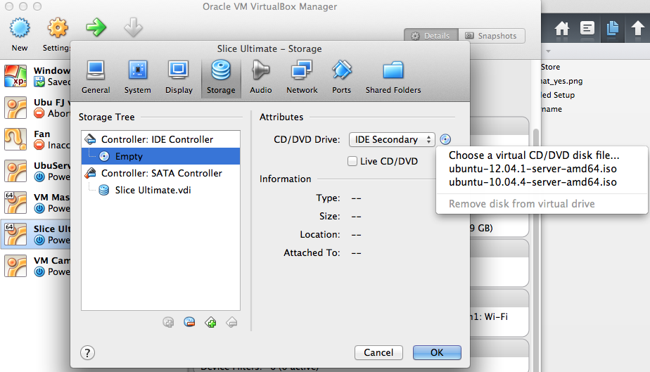
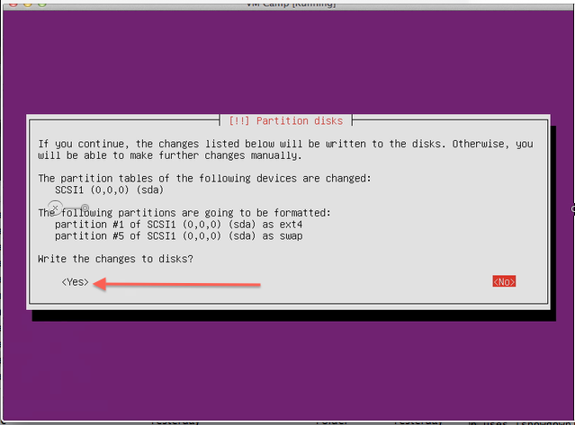
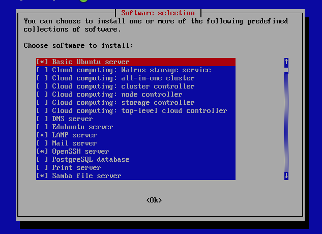
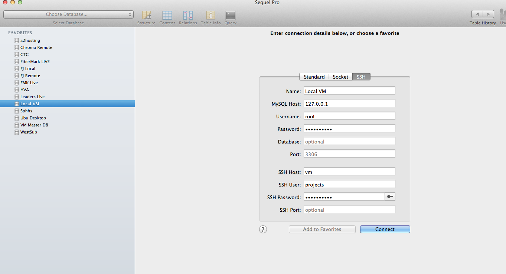

whys
You can have a matching system locally that your host(s)/slice has
You may have somes sites using apache solr
You may have one site in php 5.2 and one in php 5.3 etc
You and your co-workers know things will just work per site for all of you.
hows
Virtual Box
Vagrant (not in this presentation)
Choosing the boot CD

Format Drive Step 1

Format Drive Step 2

tasksel !

- LAMP
- Samba
- OpenSSH Server
command line work
Github Settings [click]
SSH Key
Apache Template Site
/var/www/where & who
webmin
samba | email readingDatabase
sequelpro!!!
SSH TUNNEL!!!
http://www.sequelpro.com

phpmyadmin
Download to /var/www | Untar | Go...
CLONE
Presentation in reveal.js
reveal.js and rvl.io are entirely free but if you'd like to support the projects you can donate below. Donations will go towards hosting and domain costs.
----------
Me
Alfred Nutile @alnutile